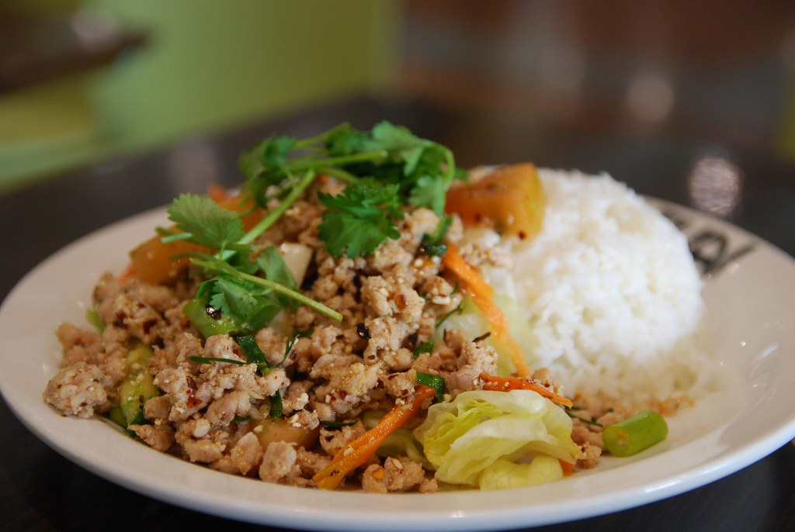
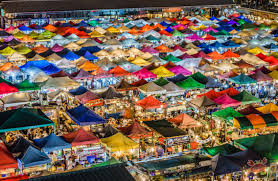

Food
Larb and Sticky Rice:
Their is a lot of great Thai food but the one I have to pick is the larb and sticky rice. Larb is dish where their is a lot of herb and ground beef, mixed with spices and lime. And always eaten with a lot of vegitable, creating a spicy and savoury dish that is a must have to eat in Thailand.
First Must Go Location
Wat Phra Kaew
A must go location that you have to go to is the Wat Phra Kaew in Bangkok. Wat Phra Kaew is a famous and well known Buddhist temple that is a must go place when in Bangkok. The temple is beautiful and holds a lot of culture and sacred Buddhist religion within this temple.

Second Must Go Location
Rod Fai Train Market
This location is an amazing market place during the day time and night time. This market is taken place at a train stations and some of the vendor stalls are on some train tracks. They sell a lot of items like clothes, souvenirs and many more! And there is so much food during the night market, its basically a whole different place during this time.
